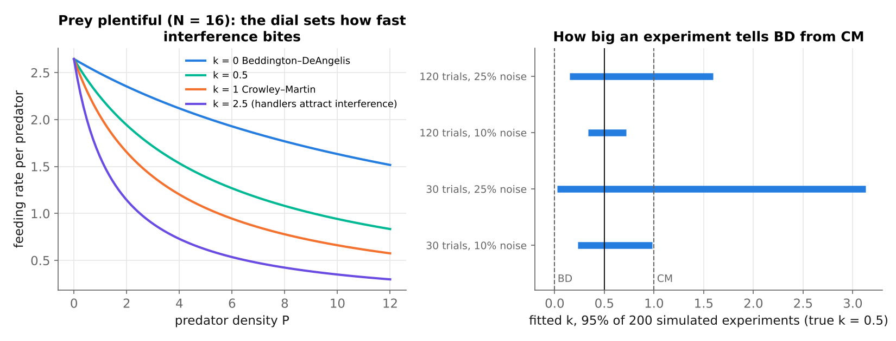

Biology series · 10 of 11
Model a predator that searches, handles prey, and gets drawn into fights with other predators. If a handling predator is drawn in at k times the rate of a searching one, the feeding rate is αN/(1 + x ∘ₖ y), with x the handling load and y the interference load. k = 0 is the Beddington–DeAngelis functional response, k = 1 is Crowley–Martin, and k above 1 means a predator holding prey attracts trouble. Separately, Tsallis diversity is the q-logarithm of Hill's effective number, so independent communities combine by the dial with k = 1 − q. For q above 1 the wall 1/(q − 1) is exactly the ceiling that diversity approaches as species are added.

Known or new. Beddington (1975), DeAngelis et al. (1975) and Crowley and Martin (1989) are the two classic predator-interference responses, and Skalski and Gilliam (2001) found that neither wins across datasets. Tsallis pseudo-additivity, S(A·B) = S(A) + S(B) + (1 − q)S(A)S(B), is well known in physics, and Jost (2006) brought the Hill-number view to ecology. The 'additive' and 'multiplicative' nulls for multiple stressors are standard (Folt et al. 1999; Crain et al. 2008). In a short search I did not find the one-parameter family joining Beddington–DeAngelis and Crowley–Martin, or its four-state derivation. It is simple enough that it may exist under another name.
Is there a lead worth following? Modest, noted rather than followed. The dial turns 'which functional response?' into 'what is k?', a single number with a behavioural meaning that a standard feeding experiment can estimate. A fitted k above 1 would point to kleptoparasitism, a handling predator drawing others in. But the simulations show the cost: separating k = 0 from k = 1 takes about 120 trials at 10% noise, and at a more typical 25% noise even 120 trials do not. That may be why published datasets disagree. Taking this further needs those datasets, which I did not have here.
A predator is in one of four states: searching, handling a prey item (entered at rate αN, left at rate 1/h), interfering after meeting another predator while searching (rate γP, left at 1/τ), or interfering while handling, entered at k·γP. The steady-state share of time spent searching is one over
so the feeding rate is αN/(1 + x ∘k y). The steady state of the four-state chain matches the formula to 1 × 10⁻¹⁴, and a stochastic simulation of one predator over 200,000 time units ate within 0.1% of it.
In a simulated 30-trial experiment crossing six prey densities with five predator densities (true k = 0.5, 4% noise), the dial fit recovered k = 0.56 and beat both classic forms on AIC. With more realistic noise the picture changes: the spread of fitted k is 0.23–0.98 for 30 trials at 10% noise and 0.02–3.1 at 25%; 120 trials narrow it to 0.34–0.72 and 0.15–1.6.
Hill's effective number of species Dq multiplies when two independent communities are combined, and Tsallis (HCDT) entropy is its q-logarithm, Sq = lnq(Dq). So the entropies combine by
q = 1 is dial 0, Shannon entropy adding. For q above 1 the wall −1/k is 1/(q − 1), and that is exactly the ceiling of Sq: at q = 2, communities of 10, 100 and 10,000 equally common species give 0.9, 0.99 and 0.9999, never reaching 1. A community at the ceiling absorbs any other, as a wall should. This is one of the few places in the series where the wall is a natural bound rather than an unphysical point.
Ecologists judge two stressors synergistic or antagonistic against a null. Adding proportional losses is dial 0, and independent action, the usual multiplicative null, is the 'or' law, dial −1, the same choice drug combinations face on the cell biology page. Island colonisation from n sources is wpow(−1, c, n).
| Place | What the circle operation does there | Known since | Verdict |
|---|---|---|---|
| Predator interference | Feeding rate αN/(1 + x ∘ₖ y); k = 0 BD, 1 CM, above 1 theft | Beddington 1975; Crowley and Martin 1989 | Exact derivation; one-parameter family possibly new |
| Diversity | Tsallis = ln_q(Hill); combines by dial 1 − q; wall = ceiling 1/(q − 1) | Tsallis 1988; Jost 2006 | Exact, known |
| Multiple stressors | Additive null dial 0, multiplicative null 'or' | Folt 1999; Crain 2008 | Exact, known |
| Colonisation | wpow(−1, c, n) | Textbook | Relabelling |
File biology/10-ecology/lean/Ecology.lean, core Lean 4.37 with no mathlib, built on the shared library's base and using ∘₁ for the circle operation. Every theorem uses only Lean's standard axioms. It goes into the shared proof library as FusedAlgebra/Topics/Biology/Ecology.lean.
bd, budget_states, cm, colonisation, corner, search_share, star_def, stressors, tsallis_two, tsallis_wall
Numeric checks: 11 of 11 pass, from checks.py beside this page.
All feeding data on this page are simulated; the noise levels (10% and 25%) are my assumptions, not taken from experiments. The descriptions of Beddington–DeAngelis and Crowley–Martin, and Skalski and Gilliam's finding, come from a web search; the other citations are from memory.